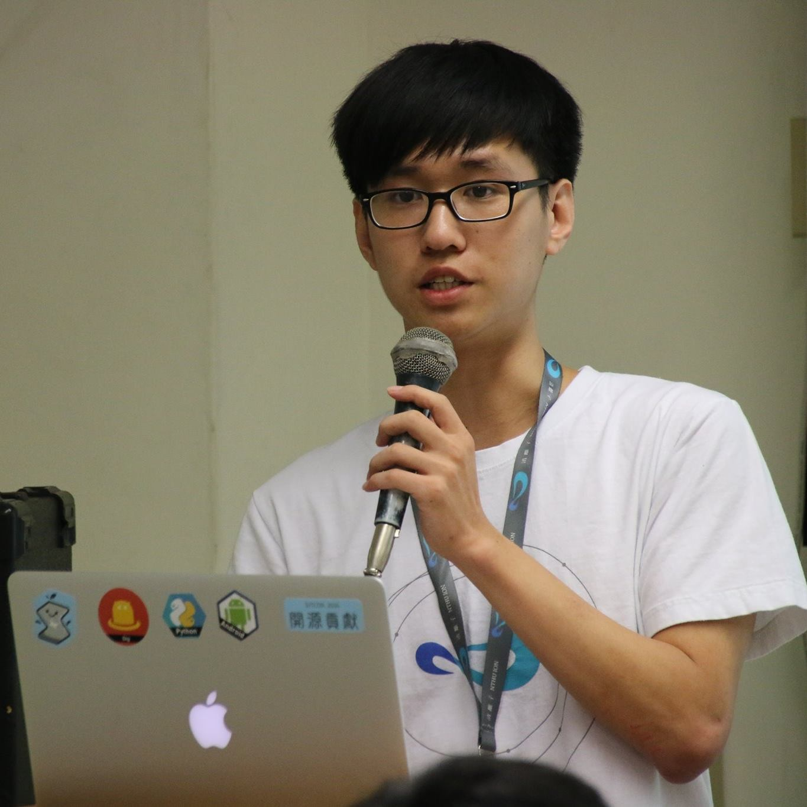

<!DOCTYPE html>
<html lang="zh-Hant-TW">
<head>
    <meta charset="UTF-8">
    <title>賴詰凱的個人網頁</title>
</head>
<body>
    <h1>賴詰凱的個人網頁</h1>
    
    <div>
        <h2>基本資料</h2>
        <ol>
            <li>姓名：賴詰凱</li>
            <li>性別：男</li>
            <li>系級：資訊工程學系三年級</li>
            <li>Email：skyle0115@gmail.com</li>
        </ol>
    </div>
    <div>
        <h2>技能</h2>
        <p>
            熟悉 C/C++, Node, React, React Native, JavaScript, Vanilla PHP, VB.NET<br>
            略懂 Python
        </p>
    </div>
    <div>
        <h2>比賽</h2>
        <ul>
            <li>2016 參加 g0v 第拾玖次飛彈試射黑客松</li>
            <li>2016 數位邏輯設計期末專題競賽：特選獎</li>
            <li>2016 參加 ATCC</li>
            <li>2015 參加 HackGen 黑客松</li>
            <li>2015 梅竹黑客松-喬鼎資訊組：第三名</li>
            <li>2014 校內學科能力競賽：佳作</li>
            <li>2013 第十五屆網際網路程式設計全國大賽：優勝</li>
            <li>2013 北區數理及資訊科能力競賽：第三名</li>
            <li>2013 校內學科能力競賽：優勝</li>
            <li>2013 青年程式設計邀請賽：佳作</li>
        </ul>
    </div>
    <div>
        <h2>作品</h2>
        <h3>Web</h3>
        <ul>
            <li>2017 <a href="https://goshare.life/">共學</a></li>
            <li>2017 <a href="https://www.youtube.com/watch?v=x2vREvfdGOU">NTHU Stage</a></li>
            <li>2017 <a href="https://nthu-stage.github.io/">NTHU Stage Landing Page</a></li>
            <li>2017 物聯網論課程：<a href="https://smart-meter.github.io/">智慧電表</a>——圖表化呈現安裝智慧電表的用電量</li>
            <li>2016 營隊遊戲：末日之必要——透過網頁進行交易，讓玩家體驗貧富差距並了解其意涵</li>
            <li>2016 社團網站：<a href="http://www.tedxnthu.com/">TEDxNTHU</a>——年度活動網站</li>
            <li>2015 HackGen 作品：<a href="http://happycoding.herokuapp.com/">享寫CODE</a>——上傳 AC 的程式碼後就可以看到其他人的 AC 程式碼</li>
        </ul>
        <h3>iOS</h3>
        <ul>
            <li>2017 <a href="https://www.youtube.com/watch?v=FIzVobeVqpw">NTHU Stage</a></li>
        </ul>
        <h3>Android</h3>
        <ul>
            <li>2015 梅竹黑客松作品：<a href="https://github.com/alexdemo/Mei_Chu_Hackathon">一拍即分</a>——為拍下來的照片立刻分類</li>
            <li>2015 <a href="https://play.google.com/store/apps/details?id=io.github.pcshjq&hl=zh_TW">府中小吃趣</a>——解決板橋高中學生找食物的困擾</li>
        </ul>
        <h3>Windows</h3>
        <ul>
            <li>2016 NTHUXXX——加退選時的小幫手，即時通知被退掉的課程</li>
            <li>2015 Lazy Image——一鍵轉換期末專案要求的圖片格式</li>
        </ul>
        <h3>HPCG</h3>
        <ul>
            <li>2016 硬體實驗設計期末專案：<a href="https://github.com/afg984/hardware_lab_2016_final">藍芽遙控車</a>——透過手機 APP 藍芽連線，控制車子</li>
        </ul>
    </div>
</body>
</html>